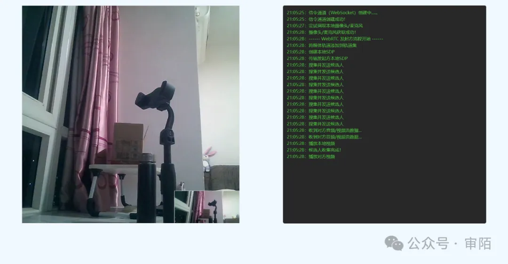

WebRTC（Web 实时通信）是一种使 Web 应用程序和站点能够捕获和选择性地流式传输音频或视频媒体，以及在浏览器之间交换任意数据的而无需中间件的技术。WebRTC 的一系列标准使得在不需要用户安装插件或任何其他第三方软件的情况下，可以实现点对点数据共享和电话会议。
WebRTC 提供了大量的 API，这对于我们在日常开发中方便使用，在此简单阐述它的基本使用：
// 创建数据源
const localStream = await navigator.mediaDevices.getUserMedia({
video: true,
audio: true,
});
// 显示数据源，localVideo 是 html 中的 video 标签
localVideo.srcObject = localStream;
//创建连接
const pc1 = new RTCPeerConnection();
//调用监控
stream = await navigator.mediaDevices.getUserMedia({
video: true,
audio: true,
});
//将媒体轨道添加到轨道集
stream.getTracks().forEach((track) => {
peer.addTrack(track, stream);
});
WebRTC 的使用过程还是遵循 WebSocket 的传输逻辑，只是在此基础上新增许多属性，更多 API 可以去官网或 MDN 去查询，接下来我们以实际 demo 展示其效果，源码如下：
index.html
<!DOCTYPE html>
<html lang="en">
<head>
<meta charset="UTF-8" />
<meta name="viewport" content="width=device-width, initial-scale=1.0" />
<meta http-equiv="X-UA-Compatible" content="ie=edge" />
<title>p2p webrtc</title>
<style>
body {
background-color: aliceblue;
}
.title {
text-align: center;
margin: 50px 0;
}
.container {
width: 500px;
margin: 100px auto;
padding: 30px;
border-radius: 10px;
border: 1px solid #ebeef5;
box-shadow: 0 2px 12px 0 rgba(142, 131, 248, 0.8);
color: #303133;
}
@media screen and (max-width: 1000px) {
.container {
width: 70vw;
}
}
ol li {
margin: 20px 0;
}
</style>
</head>
<body>
<div class="container">
<h1 class="title">操作流程</h1>
<ol>
<li>
打开 <a href="/p2p?type=answer" target="_blank">接收方页面</a>；
</li>
<li>打开 <a href="/p2p?type=offer" target="_blank">发起方页面</a>；</li>
<li>确认双方都已建立ws连接；</li>
<li>发起方点击 start 按钮。</li>
</ol>
</div>
</body>
</html>
p2p.html
<!DOCTYPE html>
<html lang="en">
<head>
<meta charset="UTF-8" />
<meta name="viewport" content="width=device-width, initial-scale=1.0" />
<meta http-equiv="X-UA-Compatible" content="ie=edge" />
<title></title>
<style>
* {
padding: 0;
margin: 0;
box-sizing: border-box;
}
body {
background-color: aliceblue;
}
.container {
width: 100%;
display: flex;
display: -webkit-flex;
justify-content: space-around;
padding-top: 20px;
}
.video-box {
position: relative;
width: 800px;
height: 800px;
}
#remote-video {
width: 100%;
height: 100%;
display: block;
object-fit: cover;
border: 1px solid #eee;
background-color: #f2f6fc;
}
#local-video {
position: absolute;
right: 0;
bottom: 0;
width: 240px;
height: 120px;
object-fit: cover;
border: 1px solid #eee;
background-color: #ebeef5;
}
.start-button {
position: absolute;
left: 50%;
top: 50%;
width: 100px;
display: none;
line-height: 40px;
outline: none;
color: #fff;
background-color: #409eff;
border: none;
border-radius: 4px;
cursor: pointer;
transform: translate(-50%, -50%);
}
.logger {
width: 40%;
padding: 14px;
line-height: 1.5;
color: #4fbf40;
border-radius: 6px;
background-color: #272727;
}
.logger .error {
color: #dd4a68;
}
</style>
</head>
<body>
<div class="container">
<div class="video-box">
<video id="remote-video"></video>
<video id="local-video" muted></video>
<button class="start-button" onclick="startLive()">start</button>
</div>
<div class="logger"></div>
</div>
<script>
const message = {
el: document.querySelector(".logger"),
log(msg) {
this.el.innerHTML += `<span>${new Date().toLocaleTimeString()}：${msg}</span><br/>`;
},
error(msg) {
this.el.innerHTML += `<span class="error">${new Date().toLocaleTimeString()}：${msg}</span><br/>`;
},
};
const target = location.search.slice(6);
const localVideo = document.querySelector("#local-video");
const remoteVideo = document.querySelector("#remote-video");
const button = document.querySelector(".start-button");
localVideo.onloadeddata = () => {
message.log("播放本地视频");
localVideo.play();
};
remoteVideo.onloadeddata = () => {
message.log("播放对方视频");
remoteVideo.play();
};
document.title = target === "offer" ? "发起方" : "接收方";
message.log("信令通道（WebSocket）创建中......");
const socket = new WebSocket("ws://localhost:8000");
socket.onopen = () => {
message.log("信令通道创建成功！");
target === "offer" && (button.style.display = "block");
};
socket.onerror = () => message.error("信令通道创建失败！");
socket.onmessage = (e) => {
const { type, sdp, iceCandidate } = JSON.parse(e.data);
if (type === "answer") {
peer.setRemoteDescription(new RTCSessionDescription({ type, sdp }));
} else if (type === "answer_ice") {
peer.addIceCandidate(iceCandidate);
} else if (type === "offer") {
startLive(new RTCSessionDescription({ type, sdp }));
} else if (type === "offer_ice") {
peer.addIceCandidate(iceCandidate);
}
};
const PeerConnection =
window.RTCPeerConnection ||
window.mozRTCPeerConnection ||
window.webkitRTCPeerConnection;
!PeerConnection && message.error("浏览器不支持WebRTC！");
const peer = new PeerConnection();
peer.ontrack = (e) => {
if (e && e.streams) {
message.log("收到对方音频/视频流数据...");
remoteVideo.srcObject = e.streams[0];
}
};
peer.onicecandidate = (e) => {
if (e.candidate) {
message.log("搜集并发送候选人");
socket.send(
JSON.stringify({
type: `${target}_ice`,
iceCandidate: e.candidate,
})
);
} else {
message.log("候选人收集完成！");
}
};
async function startLive(offerSdp) {
target === "offer" && (button.style.display = "none");
let stream;
try {
message.log("尝试调取本地摄像头/麦克风");
stream = await navigator.mediaDevices.getUserMedia({
video: true,
audio: true,
});
message.log("摄像头/麦克风获取成功！");
localVideo.srcObject = stream;
} catch {
message.error("摄像头/麦克风获取失败！");
return;
}
message.log(
`------ WebRTC ${
target === "offer" ? "发起方" : "接收方"
}流程开始 ------`
);
message.log("将媒体轨道添加到轨道集");
stream.getTracks().forEach((track) => {
peer.addTrack(track, stream);
});
if (!offerSdp) {
message.log("创建本地SDP");
const offer = await peer.createOffer();
await peer.setLocalDescription(offer);
message.log(`传输发起方本地SDP`);
socket.send(JSON.stringify(offer));
} else {
message.log("接收到发送方SDP");
await peer.setRemoteDescription(offerSdp);
message.log("创建接收方（应答）SDP");
const answer = await peer.createAnswer();
message.log(`传输接收方（应答）SDP`);
socket.send(JSON.stringify(answer));
await peer.setLocalDescription(answer);
}
}
</script>
</body>
</html>
服务端：app.js
const app = require("express")();
const wsInstance = require("express-ws")(app);
app.ws("/", (ws) => {
ws.on("message", (data) => {
// 未做业务处理，收到消息后直接广播
wsInstance.getWss().clients.forEach((server) => {
if (server !== ws) {
server.send(data);
}
});
});
});
app.get("/", (req, res) => {
res.sendFile("./client/index.html", { root: __dirname });
});
app.get("/p2p", (req, res) => {
res.sendFile("./client/p2p.html", { root: __dirname });
});
app.listen(8000);
如何使用：启动服务(node app)，访问 localhost:8000 即可
注意，此处只是 demo，适合本地运行，如果你想远程使用，建议部署至服务器。
效果图：
